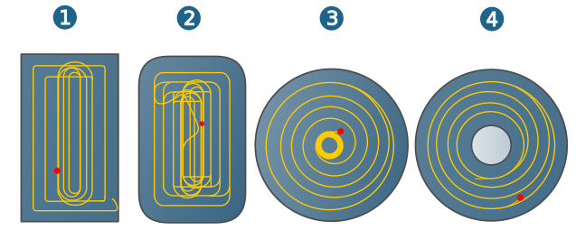
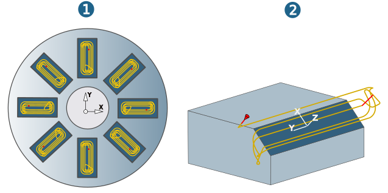
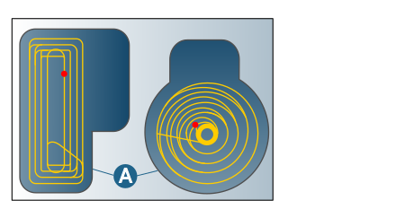
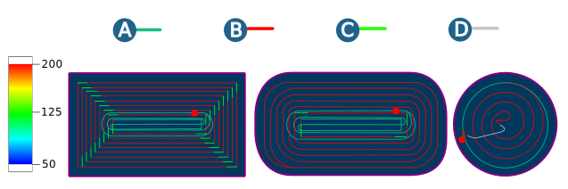

Strategy
Machining mode
Machining in Roughing mode can either be performed with the Adaptive Pocket strategy or the conventional roughing method. With the Adaptive Pocket strategy, the geometry of rectangular and circular pockets is fitted into the roughing area in order to calculate highly efficient toolpaths (‘High speed cutting’).
Tip
New version: This option activates a new calculation method for the toolpaths. Improved handling of rest material and large side infeeds shorten the machining times on the machine tool. The new method will replace the old one in the long term.
In Rest Roughing mode, machine the rest material areas remaining after a roughing job based on the resulting stock.
Finish pass: If this option is enabled, it ensures the tool moves along the entire defined contour, even if no material is cleared. If there is still some rest material, this is cleared first and then the finish path is performed. You should always enable this option if minor changes were made to the allowance between two machining passes.
Warning
If the Finish pass option is used in combination with the → → function, the stock model above the defined value is not taken into account in the cycle calculation. This can lead to a collision between the tool and the stock model.
High feed machining: Only available if the options Use adaptive pocket and Adaptive pocket only have been enabled. In this case, machining takes place with a large lateral but small vertical infeed and a high feedrate.
-
The lateral infeed (1) is based on the defined scallop height (2).
-
A lateral infeed > 50% of the tool diameter is possible.
-
Complete machining of corners (3).
-
Smooth rolling in at the start (4).
Example: lateral infeed: 22 mm, tool diameter: 35 mm
 |
Machining sequence
The tool border behavior defined on the Boundary dialog page applies to all strategies.
Plane (1): Stock removal is carried out plane by plane. If there are several boundaries, these are machined in sequence.
Pocket (2): Cavities are machined in sequence.
|  |
Toolpath fillets
Contour radius: (1) Corner fillet of the near-contour toolpath with contact to the model. Default = 0.025 x tool diameter.
Path radius: (2) Corner fillet of the other toolpaths. Default = 0.1 x tool diameter.
Adaptive pocket
Strategy for calculating the toolpaths in which, depending on the shape of the workpiece, the pocket shapes Rectangular pocket (1), Rectangular pocket with rounded corners (2), Circular pocket (3) or Circular ring pocket (4) are fitted to the existing workpiece geometry.
|  |
Use adaptive pocket: Activate for the optimized complete machining of closed (1) or half-open (2) adaptive pockets. The adaptive pocket area is machined first (A). This is followed by contour-parallel machining of the remaining areas (B). Very little rest material remains.
 |
The method is particularly well suited to roughing parts with a high proportion of adaptive pockets.
Here, the pocket shape is detected automatically, regardless of the orientation of the pocket in relation to the job frame (1).
The Adaptive pocket technology automatically identifies oblong open areas as pockets, even if the Use adaptive pocket option is not selected (2). Advantage: few G1 movements.
|  |
The Adaptive pocket only option will carry out optimized roughing only in the adaptive pocket area (A). Areas outside the recognized pocket shape (B) will not be machined. These can be machined in a later operation using a different tool (type).
|  |
If the Adaptive pocket only option is activated, the Fillet all toolpaths function is activated by default (and cannot be deactivated).
Adaptive pockets are machined at different feedrates: (A) Fullcut feedrate (initial cutting free of the material), (B) Normal feedrate (further machining), (C) Reduced feedrate (before corners), (D) Clearance feedrate (infeed movements to next machining plane). Grey: Feedrate value outside the displayed analysis area.
|  |
The value for the Normal feedrate may be defined higher than the default value for the Feedrate XY (Technology dialog page).
Use the Fullcut max. stepdown parameter to define the maximum permitted stepdown when performing full cuts. If this stepdown is smaller than the vertical stepdown, the full cut is performed in several planes (available for the Adaptive pocket only option).
The Fullcut max. stepdown parameter limits the plunge angle of the tool as plunging is carried out in full cut.
Full cut behavior
Reduce feedrate during full cut: Machining is carried out using the Reduced feedrate that is defined. The feedrate is reduced to avoid causing damage to the tool from high cutting forces.
The Reduce feedrate during full cut parameter is not available if the Adaptive pocket only or Use free tip geometry for calculation option is enabled.